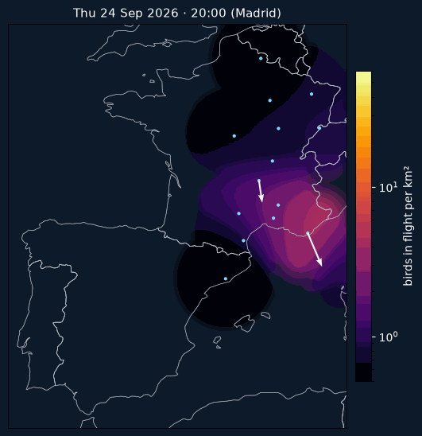
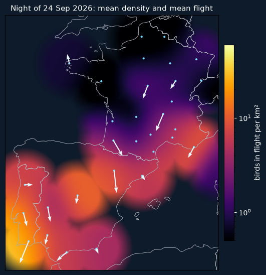

Collaboration proposal · October 2026
Nocturnal migration over Iberia can already be reconstructed and forecast from weather radar. What is missing is getting the data soon enough to act on it the same night.
Vertical profile time series (VPTS) from Spanish, Portuguese and French radars are openly published through Aloft, but arrive 48–72 hours after the fact. Curtailing a wind farm, warning an airport or switching off lights needs data within a few hours. No public product does this for Spain today.
sub-nocte is an open project that combines radar profiles with weather to forecast nightly migration intensity, including at places without a radar. Leave-one-radar-out validation gives an AUC of 0.77, catching 34% of heavy nights against 10% by chance.
On top of it we built a decision tool for 151 wind farm zones in mainland Iberia and the Balearics. In a hindcast over 59 zones (2021–2026 seasons), stopping only on the heaviest nights with low wind:
Heavy-passage nights tend to be calm (correlation −0.19 between power and bird density), which is why stopping is cheap.


Aloft: a near-real-time VPTS feed (hourly or per night) for the Iberian and French radars, even if provisional and later replaced by the quality-controlled daily files.
OPERA/EUMETNET: support for national services sharing night-time volumes for biological use with low latency, starting with AEMET and IPMA.
On 13 May 2023 the Netherlands became the first country to slow offshore wind farms (Borssele and Egmond aan Zee) for migrating birds: for four hours the turbines turned at no more than two revolutions per minute. The decision was taken two days ahead using a University of Amsterdam model that combines weather data and bird radars. Iberia has a comparable radar network and far more overland migration. The data just needs to arrive on time. Source: offshoreWIND.biz, 17 May 2023.
Pablo · Asensio94 · Project to save the birds
Code and methods: github.com/Asensio94/sub-nocte. Data: Aloft (CC0), Open-Meteo, OpenStreetMap (ODbL).